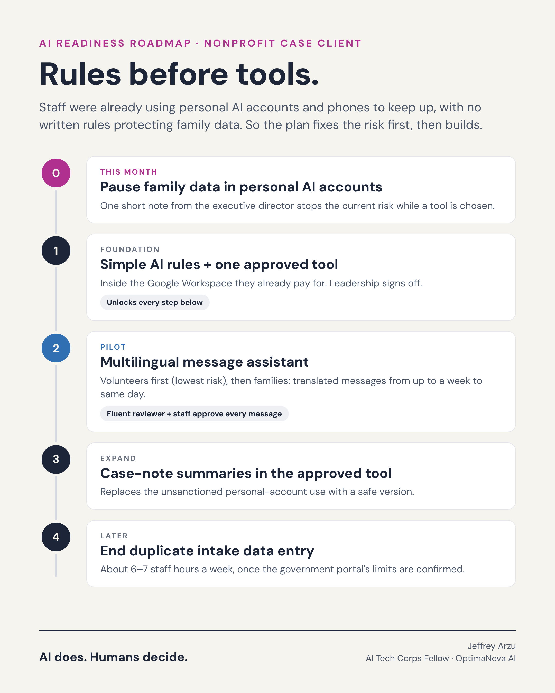
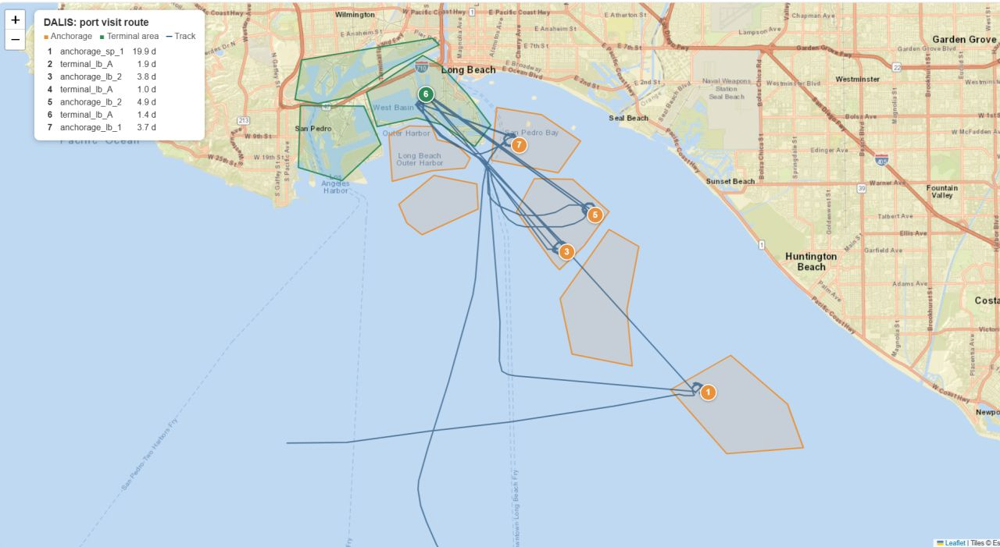

A multi-agent AI system that compiles a cross-warehouse inventory report in minutes — work that takes an ops analyst a half-day manually — without losing human oversight. Six worker agents read warehouses in parallel across three file formats, a synthesizer agent reasons across them to surface shortages and stock imbalances, and a critic agent verifies every finding against the source data. In one run the system caught its own over-flagged claim, corrected it on a retry, and passed a clean report to a human for final approval — with the full agent exchange logged for audit.
Stack: Python · Anthropic Claude · Multi-Agent Orchestration · concurrent.futures


A Gemini assistant that drafts family messages in English, Spanish, and Haitian Creole for a nonprofit after-school program, built as my AI Tech Corps capstone (OptimaNova AI). Discovery interviews showed translated messages took up to a week, so I designed it to draft all three languages in seconds while a fluent reviewer and the coordinator approve every message. It asks instead of guessing, refuses private details, and ignores hidden instructions. Tested across 12 cases including failures that led to logged fixes, with a full handoff manual for staff.
Stack: Google Gemini · Prompt Engineering · LLM Testing · Responsible AI · Technical Documentation

An end-to-end pipeline that turns 10M+ public AIS ship-tracking records from the Ports of LA and Long Beach into 736 reconstructed port visits. Filters out recreational traffic, rebuilds each visit as a timeline of anchorage and berth stops, and geofences 9 anchorage and terminal zones to trace full routes. Every zone is validated against the ships' own reported status — a check that caught and corrected a labeling error before results were shared. Found most ships berth with no wait (median 0 days), while the longest was a tanker anchored 20 days.
Stack: Python · DuckDB · pandas · Shapely · Folium · GeoJSON · Parquet

An agentic AI system built with LangChain, where an LLM plans, calls tools in a loop, and synthesizes an answer — with no hardcoded pipeline. Given a research question, the agent autonomously decides which of three custom tools to call (YouTube search, video stats, comparison), chains them in sequence, and reasons over live YouTube data. Includes a Streamlit chat UI that streams the agent's tool calls live. Fully deployed on Streamlit Cloud.
Stack: Python · LangChain · Anthropic Claude · YouTube Data API v3 · Streamlit

End-to-end analytics system analyzing 8,100 sales records across 90 products — identifying weekend demand surges of 1.2x–2.5x baseline and delivering dynamic reorder recommendations that replace schedule-based restocking. Delivered with an interactive Streamlit dashboard, a business memo, and a stakeholder presentation.
Stack: Python · SQLAlchemy · SQLite · Streamlit · pandas · Faker

90-day produce department shrink simulation built on domain knowledge from working in grocery retail. Identified that Berries and Leafy Greens drive 61% of total shrink loss and that Monday is consistently the highest waste day — driven by weekend overstock. Delivered with 3 visualizations and data-driven reorder recommendations.
Stack: Python · pandas · NumPy · matplotlib · Zerve